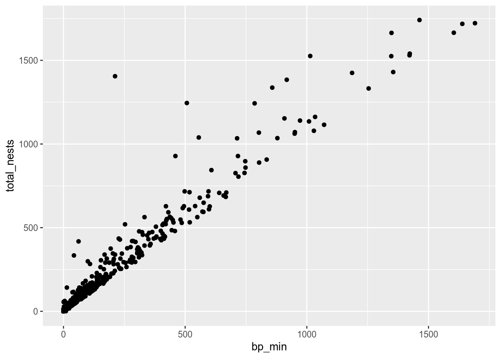
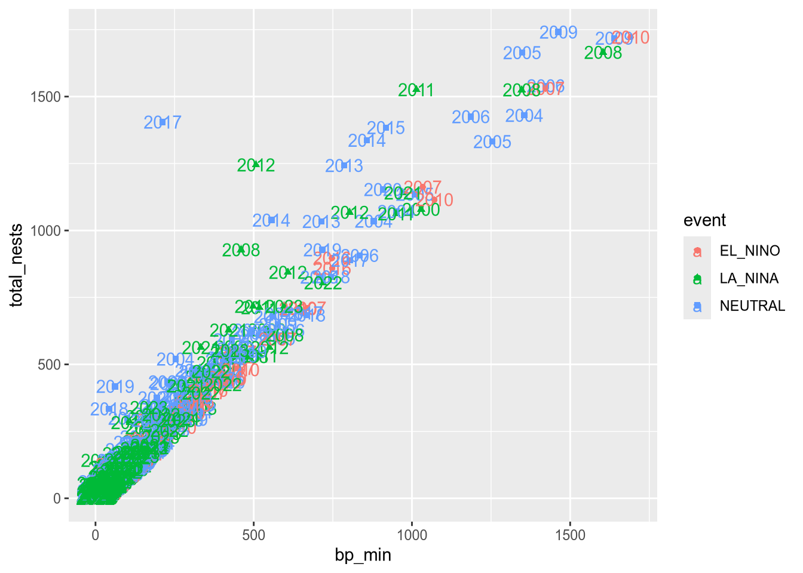
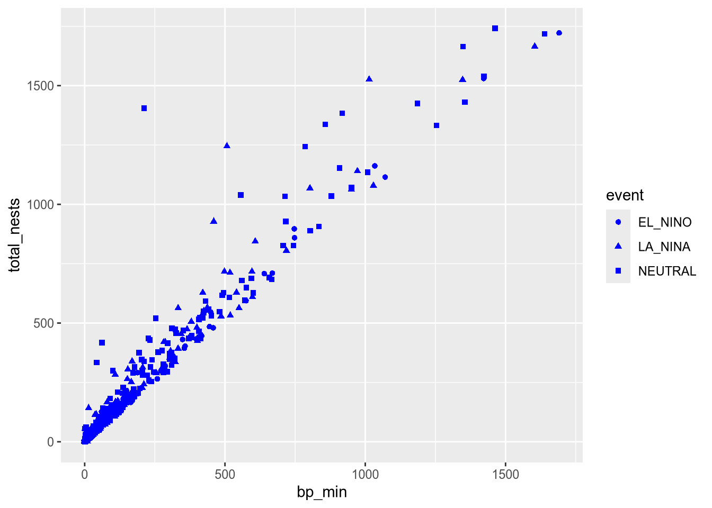
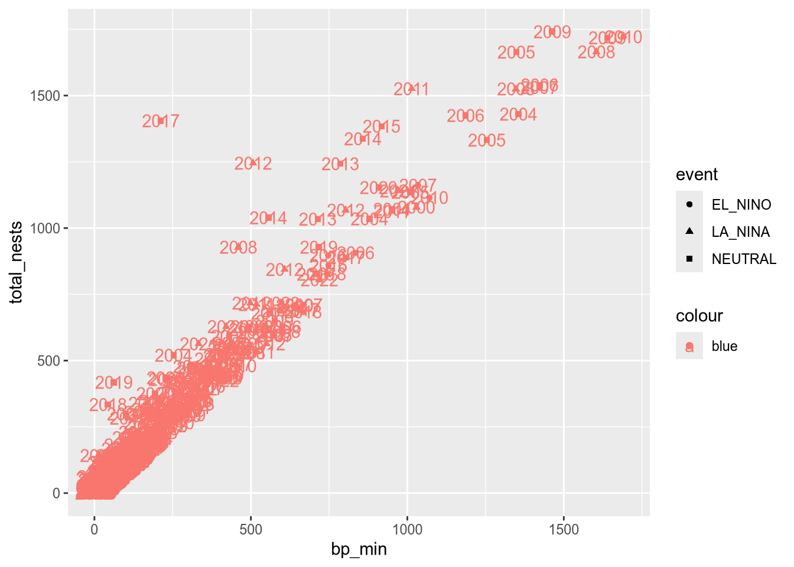
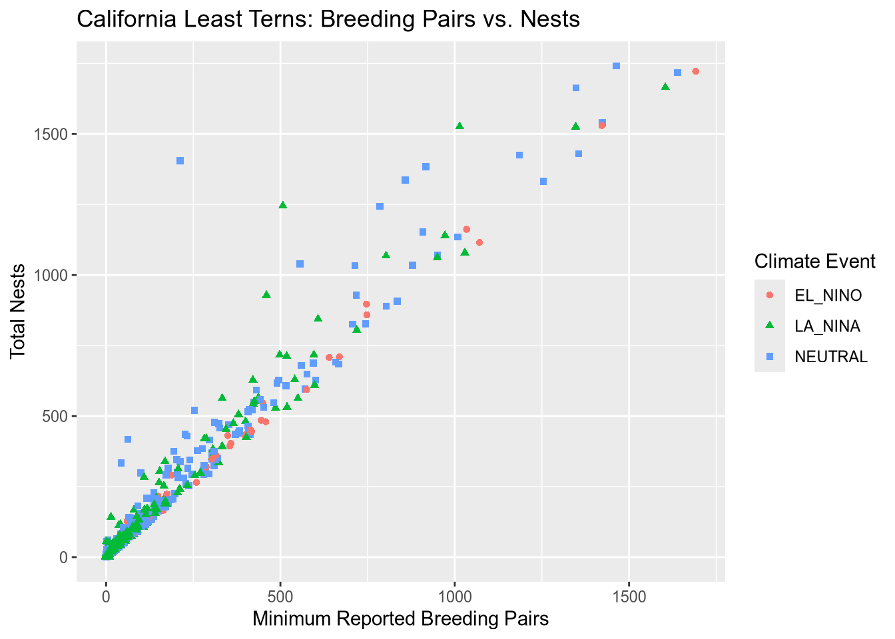
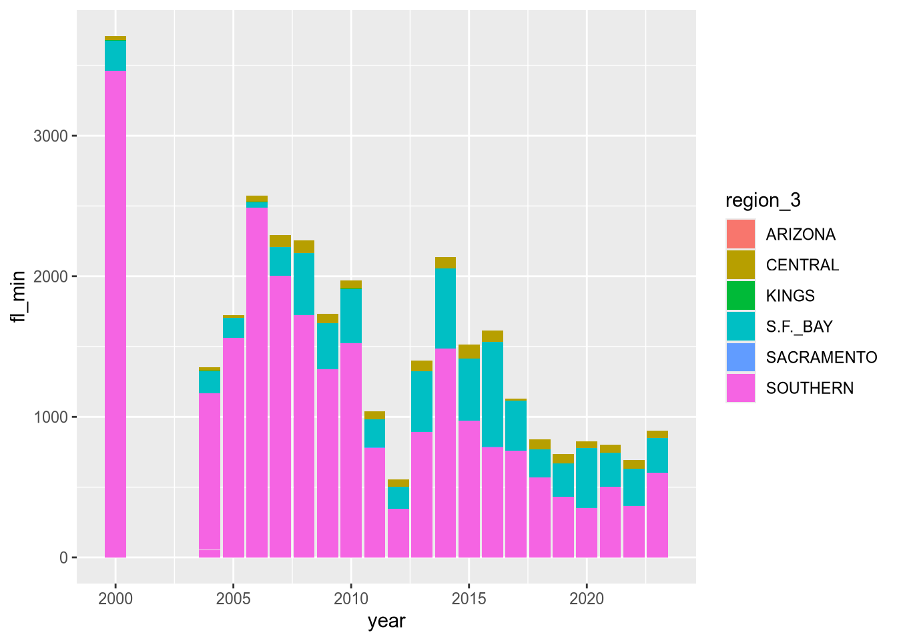
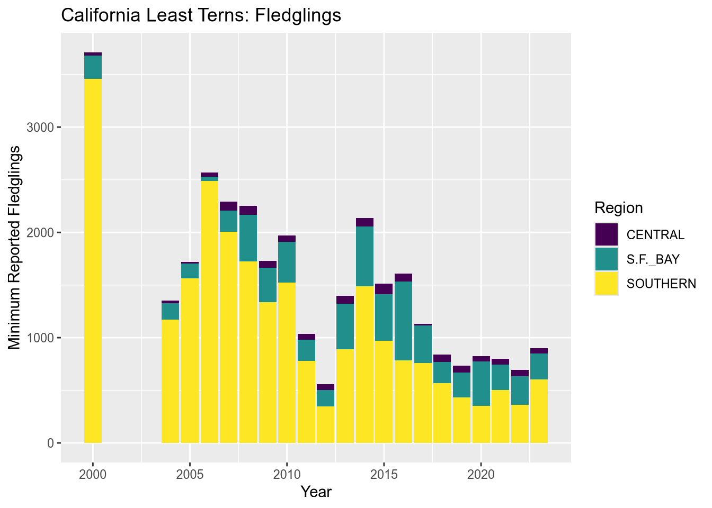

# install.packages("ggplot2")
library("ggplot2")19 Introduction to ggplot2
NoteLearning Goals
After this lesson, you should be able to:
- Describe the grammar of graphics
- Make a plot
- Save a plot to an image file
In this chapter, you’ll learn how to efficiently explore and summarize data with visualizations.
19.1 Data Visualization
There are three popular systems for creating visualizations in R:
- The base R functions (primarily the
plotfunction) - The lattice package
- The ggplot2 package
These three systems are not interoperable! Consequently, it’s best to choose one to use exclusively. Compared to base R, both lattice and ggplot2 are better at handling grouped data and generally require less code to create a nice-looking visualization.
The ggplot2 package is so popular that there are now knockoff packages for other data-science-oriented programming languages like Python and Julia. The package is also part of the Tidyverse, a popular collection of R packages designed to work well together. Because of these advantages, we’ll use ggplot2 for visualizations in this and all future lessons.
ggplot2 has detailed documentation and also a cheatsheet.
The “gg” in ggplot2 stands for grammar of graphics. The idea of a grammar of graphics is that visualizations can be built up in layers. In ggplot2, the three layers every plot must have are:
- Data
- Geometry
- Aesthetics
There are also several optional layers. Here are a few:
| Layer | Description |
|---|---|
| scales | Title, label, and axis value settings |
| facets | Side-by-side plots |
| guides | Axis and legend position settings |
| annotations | Shapes that are not mapped to data |
| coordinates | Coordinate systems (Cartesian, logarithmic, polar) |
Let’s visualize the California least terns data set from Section 11.4 to see how the grammar of graphics works in practice. But what kind of plot should we make? It depends on what we want to know about the data set!
Suppose we want to understand the relationship between the number of breeding pairs and the total number of nests at each site, and whether this relationship is affected by climate events. One way to show the relationship between two numerical features like these is to make a scatter plot.
19.1.1 Loading ggplot2
Before we can make the plot, we need to load ggplot2. As always, if this is your first time using the package, you’ll have to install it. Then you can load the package:
19.1.2 Layer 1: Data
The data layer determines the data set(s) used to make the plot.
ggplot2 and most other Tidyverse packages are designed to work with tidy data, which means:
- Each feature has its own column.
- Each observation has its own row.
- Each value has its own cell.
These rules ensure data are easy to read visually and access with indexing. The least terns data set satisfies all of these rules.
NoteSee also
All of the data sets we use in this reader are tidy. To learn how to tidy an untidy data set, see the Untidy & Relational Data chapter of DataLab’s Intermediate R workshop reader.
To set up the data layer, call the ggplot function on a data frame:
ggplot(terns)
This returns a blank plot. We still need to add a few more layers.
19.1.3 Layer 2: Geometry
The geometry layer determines the shape or appearance of the visual elements of the plot. In other words, the geometry layer determines what kind of plot to make: one with points, lines, boxes, or something else.
There are many different geometries available in ggplot2. The package provides a function for each geometry, always prefixed with geom_.
To add a geometry layer to the plot, choose the geom_ function you want and add it to the plot with the + operator. We’ll use geom_point, which makes a scatter plot (a plot with points):
ggplot(terns) + geom_point()Error in `geom_point()`:
! Problem while setting up geom.
ℹ Error occurred in the 1st layer.
Caused by error in `compute_geom_1()`:
! `geom_point()` requires the following missing aesthetics: x and y.This returns an error message that we’re missing aesthetics x and y. We’ll learn more about aesthetics in the next section, but this error message is especially helpful: it tells us exactly what we’re missing. When you use a geometry you’re unfamiliar with, it can be helpful to run the code for just the data and geometry layer like this, to see exactly which aesthetics need to be set.
As we’ll see later, it’s possible to add multiple geometries to a plot.
19.1.4 Layer 3: Aesthetics
The aesthetic layer determines the relationship between the data and the geometry. Use the aesthetic layer to map features in the data to aesthetics (visual elements) of the geometry.
The aes function creates an aesthetic layer. The syntax is:
aes(AESTHETIC = FEATURE, ...)The names of the aesthetics depend on the geometry, but some common ones are x, y, color, fill, shape, and size. There is more information about and examples of aesthetic names in the documentation.
For the scatter plot of breeding pairs against total nests, we’ll put bp_min on the x-axis and total_nests on the y-axis. Below, we set both of these aesthetics. We also enclose all of the code for the plot in parentheses () so that we can put the code for each layer on a separate line, which makes the layers easier to distinguish:
ggplot(terns) +
aes(x = bp_min, y = total_nests) +
geom_point()Warning: Removed 8 rows containing missing values or values outside the scale range
(`geom_point()`).
Important
In the aes function, column names are never quoted.
NoteNote: The Old Aesthetic Layer Syntax
In older versions of ggplot2, you must pass the aesthetic layer as the second argument of the ggplot function rather than using + to add it to the plot. This syntax is still widely used:
ggplot(terns, aes(x = bp_min, y = total_nests)) +
geom_point()Warning: Removed 8 rows containing missing values or values outside the scale range
(`geom_point()`).
At this point, we’ve supplied all three layers necessary to make a plot: data, geometry, and aesthetics. The plot shows what looks like a linear relationship between number of breeding pairs and total nests. To refine the plot, you can add more layers and/or set parameters on the layers you have.
Let’s add another aesthetic to the plot: we’ll make the color and shape of each point correspond to event, the climate event for each observation:
ggplot(terns) +
aes(x = bp_min, y = total_nests, color = event, shape = event) +
geom_point()Warning: Removed 8 rows containing missing values or values outside the scale range
(`geom_point()`).
Using color and shape for the same feature is redundant, but ensures that the plot is accessible to colorblind people.
Additional Geometries
Each observation in the least terns data corresponds to a specific year and site. What if we label the points with their years? You can add text labels to a plot with geom_text. The required aesthetic for this geometry is label:
ggplot(terns) +
aes(
x = bp_min, y = total_nests,
color = event, shape = event,
label = year
) +
geom_point() +
geom_text()Warning: Removed 8 rows containing missing values or values outside the scale range
(`geom_point()`).Warning: Removed 8 rows containing missing values or values outside the scale range
(`geom_text()`).
The labels make the plot more difficult to read and probably would even if we made them smaller, because there are so many points on the plot. Making a high-quality visualization is typically a process of drafting and revising, similar to writing a high-quality essay. In this example, adding year labels to the plot doesn’t work well, so we’ll backtrack and leave them off of the plot. If accounting for year was critical to our research question, we could do it in other ways, such as by making separate plots for each year.
Per-geometry Aesthetics
Before we remove the labels, let’s use them to demonstrate an important point about using multiple geometry and aesthetic layers: when you add an aesthetic layer to a plot, it applies to the entire plot. You can also set an aesthetic layer for an individual geometry by passing the layer as the first argument in the geom_ function. Here’s the same plot as above, but with the color aesthetic only set for the labels:
ggplot(terns) +
aes(
x = bp_min, y = total_nests,
shape = event,
label = year
) +
geom_point() +
geom_text(aes(color = event))Warning: Removed 8 rows containing missing values or values outside the scale range
(`geom_point()`).Warning: Removed 8 rows containing missing values or values outside the scale range
(`geom_text()`).
Notice that the points are no longer color-coded. Where you put aesthetic layers matters.
Constant Aesthetics
If you want to set an aesthetic to a constant value, rather than one that’s data dependent, do so in the geometry layer rather than the aesthetic layer.
For instance, suppose we want to make all of the points blue and use only point shape to indicate climate events:
ggplot(terns) +
aes(
x = bp_min, y = total_nests,
shape = event
) +
geom_point(color = "blue")Warning: Removed 8 rows containing missing values or values outside the scale range
(`geom_point()`).
If you set an aesthetic to a constant value inside of the aesthetic layer, the results you get might not be what you expect:
ggplot(terns) +
aes(
x = bp_min, y = total_nests,
color = "blue", shape = event,
label = year
) +
geom_point() +
geom_text()Warning: Removed 8 rows containing missing values or values outside the scale range
(`geom_point()`).Warning: Removed 8 rows containing missing values or values outside the scale range
(`geom_text()`).
19.1.5 Layer 4: Scales
The scales layer controls the title, axis labels, and axis scales of the plot. Most of the functions in the scales layer are prefixed with scale_, but not all of them.
The labs function is especially important, because it’s used to set the title and axis labels. Visualizations should generally have a title and axis labels, to aid the viewer:
ggplot(terns) +
aes(
x = bp_min, y = total_nests,
color = event, shape = event
) +
geom_point() +
labs(
x = "Minimum Reported Breeding Pairs",
y = "Total Nests",
color = "Climate Event", shape = "Climate Event",
title = "California Least Terns: Breeding Pairs vs. Nests"
)Warning: Removed 8 rows containing missing values or values outside the scale range
(`geom_point()`).
Notice that to set the title for a legend with labs, you can set the parameters of the same names as the corresponding aesthetics. While our plot is still far from perfect—some of the points are hard to see because of how many there are—it’s now good enough to provide some insight into the relationship between number of breeding pairs and nests.
19.1.6 Saving Plots
You can use the ggsave function to save a plot you’ve assigned to a variable or the most recent plot you created (with no argument to ggsave):
ggsave("myplot.png")The file format is selected automatically based on the extension. Common formats include PNG, TIFF, SVG, and PDF.
PNG and SVG are good choices for sharing visualizations online, while TIFF and PDF are good choices for print. Many journals require that visualizations be in TIFF format.
NoteNote: R Plot Devices
You can also save a plot with one of R’s “plot device” functions. The steps are:
- Call a plot device function:
png,jpeg,pdf,bmp,tiff, orsvg. - Run your code to make the plot.
- Call
dev.offto indicate that you’re done plotting.
This strategy works with any of R’s graphics systems (not just ggplot2).
Here’s an example:
# Run these lines in the console, not the notebook!
jpeg("myplot.jpeg")
ggplot(terns) +
aes(
x = bp_min, y = total_nests,
color = event, shape = event
) +
geom_point() +
labs(
x = "Minimum Reported Breeding Pairs",
y = "Total Nests",
color = "Climate Event", shape = "Climate Event",
title = "California Least Terns: Breeding Pairs vs. Nests"
)
dev.off()19.1.7 Example: Bar Plot
Suppose we want to visualize how many fledglings there are each year, further broken down by region. A bar plot is one appropriate way to represent this visually.
The geometry for a bar plot is geom_bar. Since bar plots are mainly used to display frequencies, by default the geom_bar function counts the number of observations in each category on the x-axis and displays these counts on the y-axis. You can make geom_bar display values from a column on the y-axis by setting the weight aesthetic:
ggplot(terns) +
aes(x = year, weight = fl_min, fill = region_3) +
geom_bar()
NoteNote: Setting the Statistics Layer
Every geometry layer has a corresponding statistics layer, which transforms feature values into quantities to plot. For many geometries, the default statistics layer is the only one that makes sense.
Bar plots are an exception. The default statistics layer is stat_count, which counts observations. If you already have counts (or just want to display some quantities as bars), you need stat_identity (or the weight aesthetic described above). Here’s one way to change the statistics layer:
ggplot(terns) +
aes(x = year, y = fl_min, fill = region_3) +
geom_bar(stat = "identity")Warning: Removed 12 rows containing missing values or values outside the scale range
(`geom_bar()`).
This produces the same plot as setting weight and using the default statistics layer stat_count.
The plot reveals that there are a few extraneous categories in the region_3 column: ARIZONA, KINGS, and SACRAMENTO. These might or might not be erroneous—and it would be good to investigate—but they don’t add anything to this plot, so let’s exclude them.
Let’s also change the color map, the palette of colors used for the categories. These are both properties of the scale layer for the fill aesthetic, so we’ll use a scale_fill_ function. In particular, we’ll use the “viridis” color map, and since the fill color corresponds to categorical (discrete) data, we’ll use scale_fill_viridis_d. We’ll also add labels:
terms_to_keep = c("S.F._BAY", "CENTRAL", "SOUTHERN")
terns_filtered = terns[terns$region_3 %in% terms_to_keep, ]
ggplot(terns_filtered) +
aes(x = year, weight = fl_min, fill = region_3) +
geom_bar() +
scale_fill_viridis_d() +
labs(
title = "California Least Terns: Fledglings",
x = "Year",
y = "Minimum Reported Fledglings",
fill = "Region"
)
You can read more about the viridis color map in ggplot2’s documentation for this function. The plot reveals that the data set is missing 2001-2003 and that overall, fledgling counts seem to be declining in recent years.
Tip
The setting position = "dodge" instructs geom_bar to put the bars side-by-side rather than stacking them.
19.1.8 Visualization Design
Designing high-quality visualizations goes beyond just mastering which R functions to call. You also need to think carefully about what kind of data you have and what message you want to convey. This section provides a few guidelines.
The first step in data visualization is choosing an appropriate kind of plot. Here are some suggestions (not rules):
| Feature 1 | Feature 2 | Plot |
|---|---|---|
| categorical | bar, dot | |
| categorical | categorical | bar, dot, mosaic |
| numerical | box, density, histogram | |
| numerical | categorical | box, density, ridge |
| numerical | numerical | line, scatter, smooth scatter |
If you want to add a:
- 3rd numerical feature, use it to change point/line sizes.
- 3rd categorical feature, use it to change point/line styles.
- 4th categorical feature, use side-by-side plots.
Once you’ve selected a plot, here are some rules you should almost always follow:
Always add a title and axis labels. These should be in plain English, not variable names!
Specify units after the axis label if the axis has units. For instance, “Height (ft)”.
Don’t forget that many people are colorblind! Also, plots are often printed in black and white. Use point and line styles to distinguish groups; color is optional.
Add a legend whenever you’ve used more than one point or line style.
Always write a few sentences explaining what the plot reveals. Don’t describe the plot, because the reader can just look at it. Instead, explain what they can learn from the plot and point out important details that are easily overlooked.
Sometimes points get plotted on top of each other. This is called overplotting. Plots with a lot of overplotting can be hard to read and can even misrepresent the data by hiding how many points are present. Use a two-dimensional density plot or jitter the points to deal with overplotting.
For side-by-side plots, use the same axis scales for both plots so that comparing them is not deceptive.
NoteSee also
Visualization design is a deep topic, and whole books have been written about it. One resource where you can learn more is DataLab’s Principles of Data Visualization Workshop Reader.